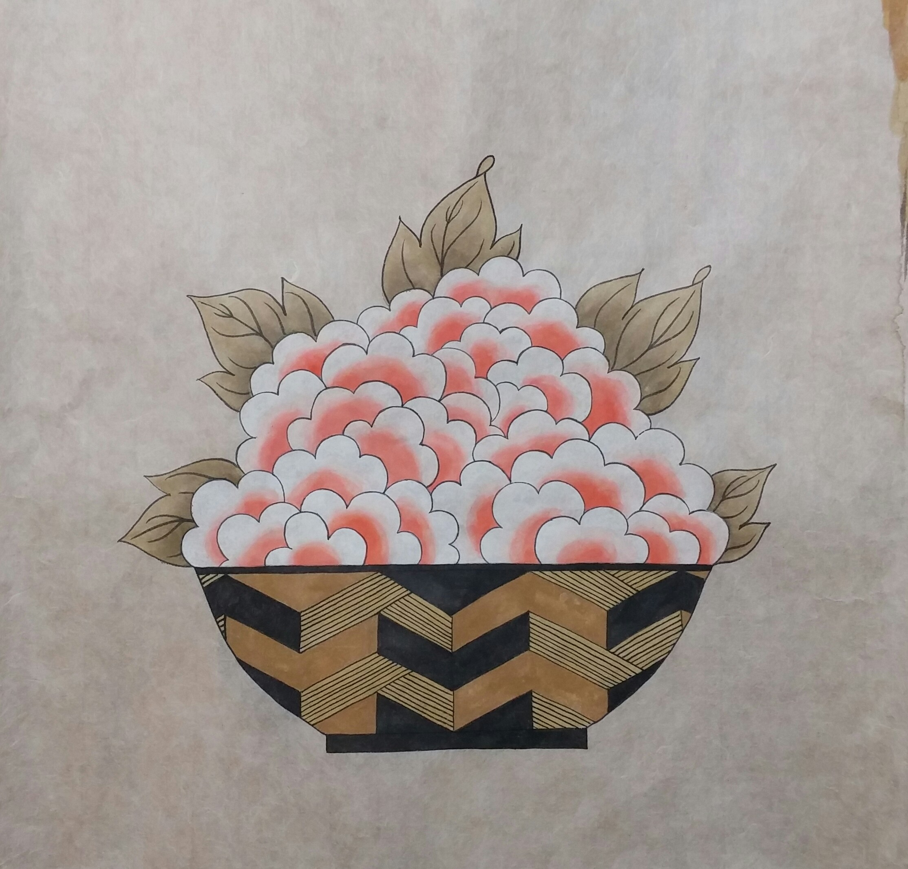
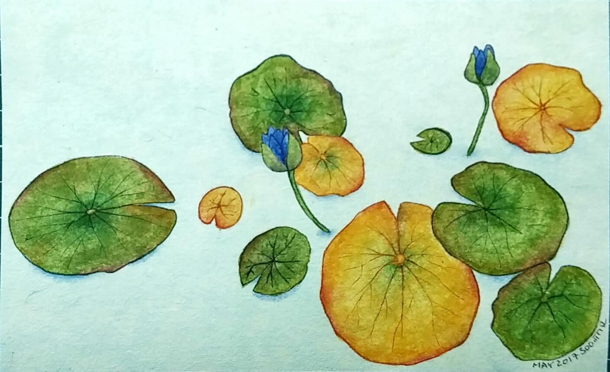

16년 10월에 회사 근처의 동네서점인 상암동 북바이북에서 12주짜리 드로잉 수업을 들었다. 학교 다닐 때도 미술시간을 좋아해 본 적이 없는 내가 졸업한 이후에 그림을 그리는 수업에 등록하다니. 그것도 돈을 내고 말이다. 열 두 번의 수업을 한번도 빠지지 않고 꼬박꼬박 다니게 되었다. 어슬렁 작가가 진행한 이 수업을 통해, 그림 그리기에 대해 용감한 모습을 보이는 내 모습을 발견하고 많이 놀랐다.
그냥 그림을 그린다는 행위 자체를 즐거워하게 될 줄은 생각도 못했다. 화가가 될 것도 아니니 잘 그릴 생각은 애초에 없었고, 그냥 선생님의 팁을 따라 했더니 내 눈에 그럴 듯한 형태가 나타나고, 이런 저런 색을 이리 저리 칠해 보니 나름 나만의 개성이 드러나는 예쁜 그림이 그려지는 것이 신기했다. 수업시간에 그린 그림을 주변 사람들에게 자랑하는 용기는 어디서 난 것인지. 그런 과정에서 전통민화를 자신만의 감각으로 재해석한 모던민화를 그리는 서하나 작가의 그림을 보게 되고, 배우기 시작했다. 매주 토요일 오전 작가의 작업실에 가서 서너시간 그림을 그리는 것이 일상의 리듬이 되었다. 가기 싫어서 꾀를 부리는 경우가 거의 안 생기는 것도 신기하다.
그림은 다른 것보다 좀 더 원초적인 자극을 주는 활동인 것 같다. 스케치를 하고 채색을 하는 시간이 빠르게 흐르는 경험이 참 좋다.
 